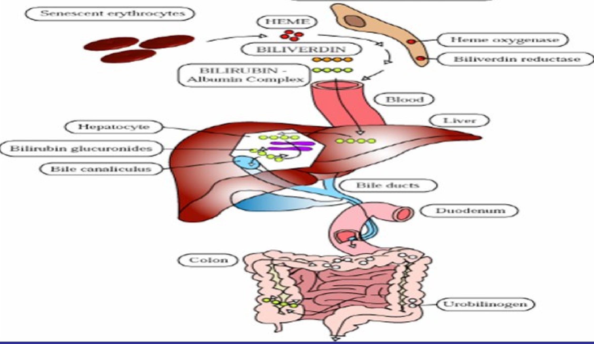

Introduction and Physiology
Objectives
- At the end of the session the learner should be able to
- Define jaundice
- Describe the metabolism of bilirubin
- Classify the causes of jaundice
- Describe how to investigate and treat jaundice
Pioneers - neonatal jaundice and kernicterus
- 1785-Jean Baptiste Baumes
- 1847-Jaques Hervieux
- 1875-Johannes Orth
- 1903-Christian Schmorl
Introduction
- Jaundice is the most common problem in neonate
- Most jaundiced children are perfectly normal
- Unconjugated bilirubin most common
Definition
- Hyperbilirubinemia- $\uparrow$ serum bilirubin [Neonatal $6-8 \mathrm{mg} / \mathrm{kg} /$ day;Adult $3-4 / \mathrm{kg} /$ day]
- Jaundice - yellow discoloration of skin and mucus membranes
Formation of bilirubin
Bilrubin is the end product of the catabolism of heme
Major source of bilirubin is from circulating hemoglobin appr 75%
Berk, PD, Howe, RB, Bloomer, JR, Berlin, NI. Studies of bilirubin kinetics in normal adults. J Clin Invest 1969; 48:2176.
Sources of bilirubin
1. Erythrocytic-Hemoglobin $-80 \%$ [ $250-400 \mathrm{mg}$ adults]
2. Non erythrocytic
- Myoglobin
- Cytochromes
- Catalase
- Peroxidase
- Tryptophan pyrrolase
Bilirubin metabolism
Heme oxygenase
Carbon monoxide Biliverdin
Biliverdin reductase
Glucuronic acid
CarboxyHb Bilirubin mono/diglucuronide
Exhaled $\mathrm{CO}_{2}$
Stercobilin Gut flora (reduction)
Urobilinogen(oxidation)
Biliary excretion
Enterohepatic circulation
- Bilirubin conjugates are unstable and are easily hydrolyzed to none conjugated bilirubin within intestinal lumen
- Bacterial Beta glucoronidase enzyme is responsible for deconjugation
- Enzyme ativity high with introduction of enteral feeding
- After hydrolysis the bilirubin can be reabsorbed across the intestinal mucosa to return to the liver via portal circulation
Fetal bilirubin metabolism
- Bilirubin detected in amniotic fluid $12 / 40$
- Always unconjugated and excreted across placenta
- Disappears by 36-37weeks
- Uridine Diphosphoglucoronosyl transferase enzyeme activity is 0.1% adult levels17-30/40
Birth changes
- Newborns rarely jaundiced at birth except in severe hemolytic disease
- $\uparrow$ bilirubin at birth independent of gestation
Daily neonatal bilirubin production
- $75 \% \leftarrow$ senescent RBC destruction
- $25 \% \leftarrow$ other sources
1. Non-erythropoeitic component
2. Erythropoieteic component
Physiological jaundice
- Mild unconjugated hyperbilirubinemia
- Develop in normal newborn
- Usually during 1-2weeks of life
- 5 to $6 \mathrm{mg} / \mathrm{dL}$ (86 to $103 \mu \mathrm{~mol} / \mathrm{L}$ ) but not $>17$ to 18 $\mathrm{mg} / \mathrm{dL}$ (291 to $308 \mu \mathrm{~mol} / \mathrm{L}$)
- Develops $72-96 \mathrm{hrs}$ after birth
Causes:
- Increased RBC turnover-large vol of mature and immature erythrocytes precusors
- decreased RBC lifespan 70-90 days compared to 120 days in adults
- immature UDPGT and transporter systems-enzyme level less than 0.1% in the first 10 days
- $\uparrow$ beta-glucuronidase activity reabsorption due to presence of bacteria in the gut
- Defective hepatic intake-less binding protein.it reaches adult levels by day 5
- Variations in thymine-adenine repeats
- Mutation in UDPGT gene(Gly71Arg) in Asians
*Maisels,MJ. Neonatal Hyperbilirubinemia. In: Care of the High-Risk Neonate, 5th ed, Klaus, MH, Fanaroff, AA (Eds), WB Saunders, Philadelphia 2001. p. 324
*** Monaghan, G, Ryan, M, Seddon, R, et al. Genetic variation in bilirubin UPD-glucuronosyltransferase gene promoter and Gilbert's syndrome. Lancet 1996; 347:578.
**** Akaba, K, Kimura, T, Sasaki, A, et al. Neonatal hyperbilirubinemia and mutation of the bilirubin uridine diphosphate-glucuronosyltransferase gene: a common missense mutation among Japanese, Koreans and Chinese. Biochem Mol Biol Int 1998; 46:21.
Risk factors
- Maternal-
- Perinatal -
- Neonatal
Maternal factors
- Race/ethnicity-Asian, Native Americans,Greek Islanders
- Runs in families- with previous risky baby the higher the risk
- Pregnancy complications-diabetis mellitus- -large babies have increased erythropoiesis therefore high bilirubin
- Maternal drugs eg oxytocin,diazepam-drugs may reduce enzyme activity
Perinatal factors
- Birth trauma-SVD have high total serum bilirubin than C/S
- Cephalohematoma
- echymosis
- Delayed cord clamping
- Forcep delivery
- Infection
- Viral -HIV
- Bacterial-streptococcus,hemophilus,treponema
- Protozoal-malaria
Neonatal factors
- Prematurity
- breech, lowbirth weight, male,
- Decreased leads to increased enterohepatic circulation
- Polycythemia
- Drugs-streptomycin,CAF,benzyl alcohol,sulfisoxazole
- Early onset breastmilk jaundice